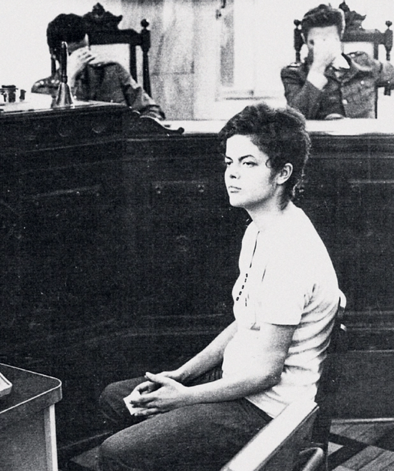

Veja todas as mulheres homenageadas nesse projeto!
Dilma Vana Rousseff
Dilma Vana Rousseff nasceu em Belo Horizonte (MG), em 14 de dezembro de 1947. Filha do imigrante búlgaro Pedro Rousseff e da professora Dilma Jane da Silva, estudou em escolas tradicionais da capital mineira e ingressou na faculdade de Economia da Universidade Federal de Minas Gerais.
Juventude
Desde cedo, Dilma militou contra a ditadura militar. Atuou clandestinamente em organizações que defendiam a luta armada contra o regime vigente, como o Comando de Libertação Nacional (Colina) e a Vanguarda Armada Revolucionária Palmares (VAR-Palmares). Teve amigos presos, torturados, exilados e assassinados pela repressão. Ela própria foi presa e teria passado por sessões de tortura, entre 1970 e 1972, na Operação Bandeirante (Oban) e no Departamento de Ordem Política e Social (Dops), em São Paulo. Dilma casou-se duas vezes. O primeiro marido foi o companheiro de militância Cláudio Galeno. Na clandestinidade e fugindo da repressão, acabaram indo para cidades diferentes e se separando. Em 1973, Dilma mudou-se para Porto Alegre, para acompanhar o segundo marido, o advogado e militante gaúcho Carlos Araújo, com quem se relacionou por 30 anos e teve uma filha, Paula. Na capital gaúcha, recomeçou os estudos na Universidade Federal do Rio Grande do Sul e iniciou a vida pública.
Vida pública
Foi secretária da Fazenda de Porto Alegre nos anos 1980 e secretária estadual de Minas, Energia e Comunicação por duas vezes nos anos 1990, pelo PDT. Presidiu ainda a Fundação de Economia e Estatística (FEE), vinculada ao governo do Rio Grande do Sul, onde havia estagiado nos anos 70. Filiada ao PT desde 2001, foi convidada por Lula no fim de 2002 para assumir o setor energético nacional. Um dos destaques da pasta durante sua gestão foi a criação do programa Luz para Todos, para levar energia elétrica a regiões de baixo desenvolvimento humano. Conhecida pela personalidade forte, Dilma substituiu José Dirceu na Casa Civil em 2005, durante o escândalo do mensalão, e a partir de então começou a estreitar sua parceria com Lula. Em 2010, foi escolhida pelo PT para disputar a presidência da República em nome do partido e venceu a primeira eleição de sua vida. Em 2009, Dilma Rousseff enfrentou um câncer linfático, mas não se afastou da rotina diária. Submeteu-se a tratamento em São Paulo e foi declarada curada em setembro do mesmo ano. Uma das missões mais recentes de Dilma é ser avó. Em setembro de 2010, nasceu seu primeiro neto, Gabriel.